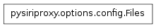
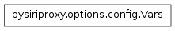
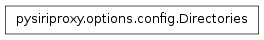
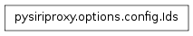
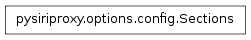

The config module contains constants pertaining to configuration of pysiriproxy.

The Files class contains definitions of various file paths that pertain to pysiriproxy configuration.
The CertFile property contains the path to the certification file for pysiriproxy.
The ConfigFile property contains the path to the configuration file for pysiriproxy.
The EtcHosts property contains the path to the system hosts file.
The GenCerts property contains the path to the bash script that generates certificates for pysiriproxy.
The KeyFile property contains the path to the key file to use for pysiriproxy.
The LogFile property contains the path to the log file to use for pysiriproxy.

Define various variables that can be used within the configuration file.
Note
Variables should be all caps
The name of the variable which stores the path to the configuration file.
The name of the variable which stores the path to the user’s home directory.

The Directories class contains various properties which define directories that contain pysiriproxy data.
The Config directory contains the user’s siri proxy configuration directory.
The Etc property contains the path to the system etc directory.
The Home property contains the user’s home directory.
The Scripts property contains the scripts directory within the user’s siri proxy configuration directory.
The SiriInstall property contains the system installation directory for pysiriproxy.
The SystemDefaultConfig property contains the path to the system directory which contains the default configuration files created when pysiriproxy is installed on the system.

The Ids class defines various configuration settings.
Note
ConfigParser converts all properties to lower case
The name of the configuration property that stores the certification file.
The name of the configuration property that stores the debug level for the system.
The name of the configuration property that stores the string which Siri will respond with in the event that an Exception is encountered while processing an object filter, or a speech rule.
The name of the configuration property that determines whether the server application will exit in the event that the connection to the iPhone is lost. This will allow an external script to restart the server cleanly each time the connection is lost.
The name of the command line property that determines if the SSL certificates should be generated.
The name of the configuration property that stores a particular host name.
The name of the configuration property that stores the version of iOS that pysiriproxy should be configured for.
The name of the configuration property that stores the path to the key file to use for the system.
The name of the configuration property that stores the path to the log file to use for the system.
The name of the configuration property that stores the log level to use for the system.
The name of the configuration property that stores the path to the directory containing the plugin scripts.
The name of the configuration property that stores the port number to use.
The name of the configuration property that stores the boolean indicating whether logged messages should be timestamped or not.

The Sections class defines the names of the sections that can be used within the configuration file.
The section containing debugging configuration settings.
The section containing general configuration settings.
The section containing settings pertaining to logging the system.
The section containing settings pertaining to creating responses.
The section containing settings pertaining to Apple’s web server.
The section containing settings pertaining to the iPhone connection.